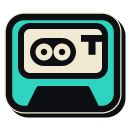

Onde salvar suas reuniões?O Talktrail grava o texto de cada reunião numa pasta sua, ao vivo.
- Clique em Escolher uma pasta. A janela abre em Documentos.
- Crie uma pasta chamada Talktrail (botão "Nova pasta").
- Clique em Abrir.

Onde salvar suas reuniões?O Talktrail grava o texto de cada reunião numa pasta sua, ao vivo.